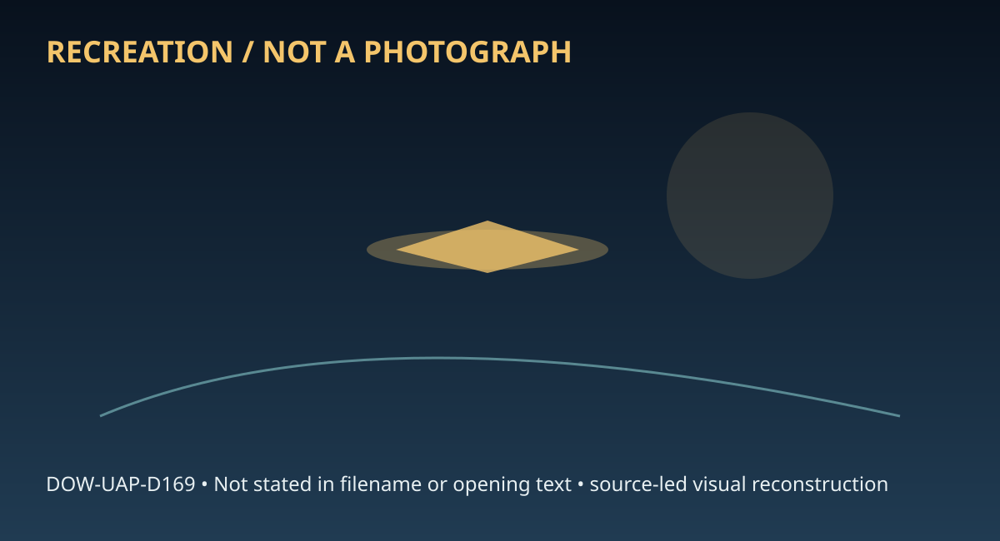

Release 07 / archival case file / DOW-UAP-D169
D169 Baass Monthly Report March 2009
This d169 baass monthly report march places a report, personnel, ranch thread in a 2009 Germany record.
ID: DOW-UAP-D169
Filename:
DOW-UAP-D169-BAASS_Monthly_Report-March_2009.pdfDate marker: 2009
Location: Germany
Agency or collection signal: Air Force
Pages read: 42

RECREATION / NOT A PHOTOGRAPH. The diagram is an interpretive editorial aid, not source imagery.
What this document says
The opening page's extracted text begins: “1111/IIIIW1111/1,IIII 11,1111111,11111,,1,11 ® March Report ril 10, 2009”
Across the 42 pages, the recurring terms are report, personnel, ranch. Those details belong to this file, not to a generic case template. Page-level reading follows:
- Page 1: 1111/IIIIW1111/1,IIII 11,1111111,11111,,1,11 ® March Report ril 10, 2009
- Page 2: March 2009 Report Bigelow Aerospace Advanced Space Studies (aka) BAASS This inforn;ation is proprietary afld confideAtial afld caAAot be dissemiAated or Used without prior written consent from the Operating Manager of BAAss•.
- Page 3: PREFACE This Progress report summarizes BAASS activities and progress for the period March 1-March 31, 2009. TABLE OF CONTENTS Topics covered in this report are the following: Progress on Recruiting Staff ................................................................................. Page 2 Progress on Obtaining Clearances for Existing Staff...............
- Page 4: Progress on Staff Recruitment • Between March 1-31, 2009 in response to job advertisements in multiple on-line locations, BAASS received a total of 526 resumes. • The first level of screening (removal of applications on the basis of too frequent job changes, those obviously inexperienced to work at BAASS, non-US citizens etc) was conducted on all resumes. •
- Page 5: BAASS Employee List A.AP Person 4 Administrator A.AP Person 7 Deputy Administrator Significant Part-time Fulltime BAASS Employees BAASS Employees A.AP Person 8 Senior Analyst level V A.AP Person 95 Principal Engineer A.AP Person 9 Lead Program Manager A.AP Person 52 Senior Engineer level Ill A.AP Person 1 0 Lead Program Manager A.AP Person 53 Executive Assis
- Page 6: We are optimistic that in the next 4-5 months we can hire the full complement of staff (possibly 50-60 personnel to begin the 2nd year) that will make BAASS the necessary vibrant organization to make progress in this field. This will give BAASS a solid foundational base. With increased funding for next year we hope to dramatically the number of employees. Pr
- Page 7: Progress by Earthtech on Production of 24-30 Position Papers on Physics of Advanced Aerospace Vehicles AAP Person 57 ,.// On December 31, 2008 BAAS$ awarded a contract to Earthtech lnternational1~7 ( IMP Person 57 Ito deliver 24-30 position papers that will be based on expanding~ focusing on strategically important sub-projects from the 12 position papers pr
- Page 8: Contributor Organization Topic Due Date IAAP Person 58 EarthTech lntern'I Antigravity Studies 5/1/20CY:J I ~p p:~~?.~ I~p Person 75 IConsulting SC-mediated gravity experimentation 5/l/20CY:J I IAAP Person 69 Positronics Research Matter-antimatterenergy source 5/1S/20CY:J I AAP Person IAAF> Person 7 4 Icons. Warp drives 5/1S/20CY:J 74 .. IAAP Person 73 Wayne
- Page 9: IAAP Person 67 I IAAP Person 68 I IAAP Person 78 I IAAP Person 80 I IAAP Person 81 I IAAP Person 79 I I I IAAP Person 64 I IAAP Person 77 1- I I IAAP Person 76 AAP Person IAAP Pers.o~.75. ... j ......... 75 HyperTech Concepts Univ. ofSt. Andrews Univ .ofTexas/ Austin lntem'I Acad. Astronautics Wayne State Univ. DoD consultant Northrop Grumman (ret.) GravWave
- Page 10: Progress on BAASS Database Development-Proiect Capella Data Warehouse Statistical Executive Summary The data warehouse currently includes 234,364 unusual aerial phenomena reports of sightings occurring from 593 B.C. to present time. Some of the sightings in the data warehouse are duplicated reports and some have received classical explanations as natural phe
- Page 11: • Approximately 0.6% of sightings were reported by police officers • Approximately 0.3% of sightings were reported by pilots • Approximately 0.8% of sightings reported physical traces • Approximately 0.5% of sightings reported physiological reactions by witnesses • Approximately 2.1% of sightings reported entities or lifeforms • Approximately 0.6% of sightin
- Page 12: 5 A.AP Person J:= I ------Add~tional-Re-peFts-a-s-s-igner::: Classifications without category number: AN: 40 FB: 198 MA: 245 CE: 0 f P Person ___,J.otal-Reports-in eac~ ....__lclassification: AN: 10123 6.5% FB: 73601 47.6% MA: 23460 15.2% CE: 47413 30.7% • Approximately 1.9% of cases were reported by military personnel • Approximately 0.6% of cases were repo
- Page 13: 5 AAP Person ______Re.p-o.rtsb~-------- IClassification: AN1: 51 FB1: 490 MA1: 383 CE1: 498 AN2 : 2 FB2: 5 MA2: 16 CE2: 44 AN3: 2 FB3: 0 MA3: 0 CE3: 20 AN4: 0 FB4: 0 MA4: 1 CE4: 20 ANS: 2 FBS: 2 MAS: 0 CES: 8 Multiple Witness Events: 819 Electro-Magnetic Effects Events: 99 Ground Traces Events: 36 Landing Events: 74 + 8 Possibles Physiological Events: 81 Rad
- Page 14: ... AAP Person ..Reports-byE)classification: 5 AN1: 1 FB1: 4876 MAl: 72 CEl: 171 AN2: 3 FB2: 256 MA2: 371 CE2: 52 AN3: 0 FB3: 0 MA3: 0 CE3: 10 AN4: 0 F84: 0 MA4: 0 CE4: 5 ANS: 0 FBS: 0 MAS: 1 CES: 1 AAP Person . .....Not-yet.assignedLJClassification: 7304 5 Military Events: 732 Airfield Events: 667 Military Aircraft Events: 31 Nuclear Events: 57 4. UFOCAT Da
- Page 15: Physiological Events: 740 Animal Reaction Events: 570 Electro-Magnetic Effects Events: 1121 5. MUFON Case Management System Database Summary: Database of cases reported to MUFON via their web-based reporting system initiated in mid-2003. Does not contain MUFON's 13,000 reports received from 1969 through mid-2003. Format: Web-based Database Total Reports: 15,
- Page 16: Statistical Summary - Definition of Terms Term Acronym Definition ....... FB--· A! - !classification used when the observed object(s) travel without discontinuity FBl A simple sighting of an unexplained object "flying by" in the sky without discontinuity FB2 A flyby with physical evidence, such as a recorded sound or radar tracking FB3 A flyby where report o
- Page 17: MAS When permanent injury or death is related to a maneuvering object ~P P:.~~.?~ ..CloseEncounter····· ··GE ·· -~ ·· !classification used when object(s) are observed on or near the ground CE1 Objects seen on the ground or close to the ground CE2 Close encounters where physical effects or traces were reported CE3 Close encounters where "occupants" or "entiti
- Page 18: AN3 Anomalies with associated entities -- could involve reports of ghosts, yetis and other instances of crytozoology, or elves or spirits AN4 Anomalous reports in which witnesses describe personal interaction with entities in the reality of the entities themselves ANS Anomalous injuries or deaths are reported, such as unexplained wounds or spontaneous combus
- Page 19: BAASS has Contracted to Purchase Information on UAPs from MUFON In order for BAASS to best serve the government it needs to become the central information source on UAPs in the United States and around the world. It is essential to receive information on current UAPs that are occurring in real time in the United States until BAASS has sufficient internal cap
- Page 20: University of Nevada Research Proiect BAASS is creating a very valuable research program with the University Nevada Las Vegas (UNLV) involving multiple faculty, post doctoral fellows and graduate students .. This unique program will examine the sociological, military and scientific consequences to the United States of a variety of scenarios involving UAP act
- Page 21: The following are a small number of scenarios with which UNLV faculty teams will be tasked with studying consequences to the media, economy, department of defense, political groups, science, the general public, religion, public health and academia in the United States. Needless to mention, within these general sociological groupings there are dozens of sub-c
- Page 22: (6) Multiple day and night sightings of UAPs are seen by multiple witnesses over a small size town. They are detected on radar and at least ten F-16s are scrambled in response. The UAPs are detected flying near the restricted air space over the residence of a sitting President of the United States (POTUS). [Actual case September 2007) (7) The United States A
- Page 23: Progress on BAASS Becoming the-Official reporting Agency for the FAA o In January 2009, BAASS initiated contact with the FAA. The intent was for BAASS to submit change recommendations in accordance with FAA Order 7000.SCto the three FAA publications listed below which: • Changes "National Institute for Discovery Sciences (NIDS)" to Bigelow Aerospace Advanced
- Page 24: THE UFO ASSAULT ON BRAZIL, WITH ITS EPICENTER AT COLARES This report documents the enormous imp,act of the UFO assault on the people Brazil from 1977 - 2003. It began in the town of Colares, in the state of Para, and spread throughout the country. Executive Summary March 30, 2009 22 Ibis information is proprietary and confidential aAd cannet be dissemiflated
- Page 25: IAAP Person 8 Senior Scientist Bigelow Aerospace Advanced Space Studies I'843(a)(2) THE UFO ASSAULT ON BRAZIL, WITH ITS EPICENTER AT COLARES EXECUTIVE SUMMARY Introduction The world is full of many terrors. This study is about one of them, a terror that comes from some place other than Earth. It is a terror that the world's governments have completely ignore
- Page 26: Since the 1970s, and probably much earlier, these objects have been doing terrible things to people in Brazil - perhaps more so than in all other countries combined. This fact has been documented by extensive on-the-scene ~i Person investigations conducted bvl Ia well-known private investigator and IAAP Person 5 Ian eminent scientist from the United States.
- Page 27: • Geographic Data • Spacecraft Data • Occupants • Government Interactions. The data given below has been extracted from the transcripts of more than 370 on-site investigations, involving 514 victims, as conducted bylAAPPerson 127 1 beginning in the late 1970s and running through 2003. The attached map (Exhibit 1) documents the location of many of the cities
- Page 28: organizations working throughout the country at the same time. Very little of that body of work has been translated into English. Conversion factors used in this report are as follows: • Meter= 39.37 inches • Kilometer= 0.62 miles • Square kilometer= 0.3861 square miles Human Effects People living in northeastern Brazil since the 1970s have been terrorized i
- Page 29: sinister nature of what happened to the people there. The data summarized ~i P:.~:?~...belo.wJs .based.on an e-valuat~eR-G~- !detailed investigative reports. • Deaths - 10 humans died after periods of prolonged illness following their exposure to this technology. More than 300 animals were found dead of unknown causes during the same period and in the same a
- Page 30: 127 • Cold - 28 people felt like they were enveloped in a pocket of cold air during the event • Prolonged illness - 36 people were ill for long periods of time, ranging from months to years. The deaths reported above came from this select group of people. AAP Person _• - Anemia--E]located 3 people that were found to be anemic during periods following their e
- Page 31: Geographic Data Brazil is one of the largest nations in the world, with more than one hundred seventy-five million people living in a land almost as big as the United States. However, most of the investigations covered by this report are from northeastern Brazil, ranging from the Amazon, to northern Maranhao, to Colares, and down the Atlantic coast to Urugua
- Page 32: . • Minas Gerais - 44 • Para - 92 (The cities of Colares and Belem are in this state) • Paraiba-4 • Parana -1 • Rio De Janerio - 11 • Rio Grande do Sul - 4 • Rio Grande do Norte -121 • Sao Paulo - 20 • Vila -3 • Other-5 • Total locations- 371 • Type of terrain where incident occurred • Land - 281 • Water-38 • Unspecified - 52 • Number of towns/villages affec
- Page 33: • Number of people not directly affected - 10,000 to one million. People across northeastern Brazil watched the sky with fearful eyes, worrying that they would become victims. Fortunately, the UFOs usually kept their distance as they traversed the area.I lwerkindicates.thatthe UEOs . ~; .Person needed to be closer than 200 meters to do any significant damage
- Page 34: objects operate and perhaps lead to reverse engineering of the technology involved. • Shape (Multiple craft were observed in some of the incidents) • Lights - 2 79 • Orbs-120 • Discs-46 • Spheres - 19 • Triangles - 5 • Cylinders - 18 • Other (unusual shapes) - 6 • Size - Ranges from baseball to basketball size for orbs, while the more structured type of craf
- Page 35: electricity and bright lights at night, other than an occasional automobile's headlights were unheard of. • Pursue victim -54 • Switch on/off- 58 • Penetrate roofs/walls - 20 • Search the area - 18 • Craft becoming visible or invisible - 2. Many other victims said the craft just disappeared or the craft just appeared above them, but didn't elaborate, therefo
- Page 36: interacted with the victims on the ground. Some of the reported characteristics of the occupants are as follows: • Size (Approximate) • Three feet tall - 51 • Four feet tall -10 • Adult human-sized - 35 • Animal-like - 1 • Features: Since the majority of the incidents occurred at night, the features of the occupants were not clearly visible to the victims, t
- Page 37: 1843(a)(2) l1843 2 (a)( ) la graduate of the National School of Intelligence in Brasilia, and his Air Force team interviewed around three hundred people who had had close encounters, including dozens of men and women who had been burned by UFOs. Villagers in Colares reported that sometimes UFOs would hover in the dark sky at night and beam down rays of light
- Page 38: 1843 2 (a)( ) said his team photographed many UFOs and admitted he was once badly frightened when a huge UFO hovered just 100 meters above him and his men. "I was terrified," he said. "They could have done anything they wanted to with us. It was about seven o'clock - just after sunset. We never saw anything approaching. Suddenly a big disc-shaped object thir
- Page 39: • By doctors - 48 • Photographs - 7. The number of photographs is low because very few AAP Person of the individuals interviewed by[3owned·cameras,--However, 127 ···· during the Brazilian Air Force investigation at Colares,! 1843(a)(2) I l1843(a)(2) ~aid "we took about 300 hoto raphs of eight different 2 shapes of UFOs." At one point, 1843(a)( ) said they ph
- Page 40: Conclusion to Colares Report The documentation shows that northeastern Brazil was a UFO hot spot for at least two decades. Since the activity may be continuing in some form, a follow-up investigation of the current UFO situation in that region is warranted. From the analysis of the rich treasure trove of recorded data from that era, it is evident that it is
- Page 41: BAASS Continues Study on Information on UAPs released by the British, Canadian and Danish Governments. • Over the past eighteen months, The Ministry of Defense (MoD) in the United Kingdom has released approximately 7297 pages of files pertaining to the performance of alleged UAPs in British air space. More recently the British MoD released a second group of
- Page 42: Conclusion As BAASS makes progress in and accelerates the hiring of employees in the coming weeks, it will be crucial that the organization has rapid access to the information that will keep the scientific staff engaged. Secondly BAASS is currently accelerating the acquisition of all information pertaining to this topic in the open literature, increasingly f
Historical context and disclosure schema
Read in context, this record belongs to the 2009 information environment: Air Force paperwork, a Germany setting, and the reporting conventions visible in the source. Its broader disclosure value is procedural as well as anecdotal: it shows how an observation, material question, investigation, or analytical program was routed, described, and preserved. That makes it comparable to other Release 07 records without collapsing unlike evidence into one event.
Evidence limits
The source establishes that this document exists and records what its authors or quoted witnesses wrote. It does not, by itself, prove the identity, performance, origin, or physical reality of the reported subject. Extraction preserves wording but cannot restore missing attachments, authenticate provenance, or independently validate testimony. Interpretations beyond the page-specific record remain hypotheses.
Source: supplied PDF in research/tranche-07. This article is a research aid, not a claim that the reported object was non-human.